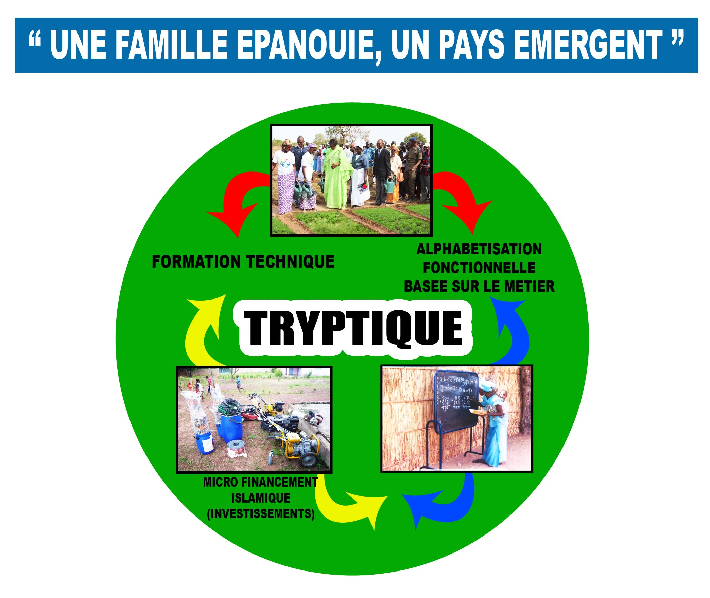

Ce programme, articulé autour du tryptique, communément appelé « MAYONNAISE DU PALAM », « Alphabétisation fonctionnelle - Formation Technique et Professionnelle – Microfinance Islamique » à l’effet d’atteindre l’objectif décrit plus haut.
LA STRATEGIE D'INTERVENTION DU PALAM
Cette approche novatrice qui intègre la fonctionnalité économique et sociale de l’alphabétisation à la formation technique permet de toucher :
- les jeunes en difficultés, ce qui contribue significativement au retrait et à la réinsertion des enfants de la rue dans les zones d’intervention et à favoriser leur intégration socioprofessionnelle ;
- et les femmes travailleuses en leur permettant de renforcer leurs compétences et tendre vers leur professionnalisation.
Enfin, à travers la microfinance islamique, levier important du dispositif, des études ont montré qu’elle répondait mieux aux besoins de financement des groupes vulnérables, notamment dans le monde rural.